火山 Jungle
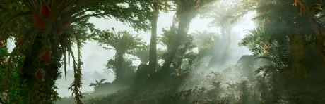
the 火山 Jungle is a Primordial 类型 生物群系 that can be found on 多种星球 in 绝地潜兵 2.
描述
“这颗湿润的星球既有深海，也有郁郁葱葱的森林和草原，充满了生命的气息。
These 行星 类型 are known for their lush, dense, humid jungles filled with life. High above the jungles and active volcanoes, flocks of four winged birds can be seen flying across the sky. The 火山 Jungle is the green colored triplet of the Ionic Jungle and the Ethereal Jungle primordial biomes.
Like the other primordial biomes, the 火山 Jungle features dense and humid jungles full of trees, plants and ferns, all of them having green leaves. Large, lush clearings also fill the 浮出地面, full of green grass, flowers and rock formations. The 行星 also features beaches, oceans, the occasional lake, distant 山 ranges and volcanoes.
The 生物群系 is very 热带, as if someone had made an entire 行星 look like the coastlines of the Cabiric. The 火山 Jungle is one of the four biomes that resemble Earth the most, right behind the Deciduous Forest and the Plains biomes.
These green jungles are filled with life, and 特性 at least one four-winged Avian 生物 that flies in flocks above the 浮出地面.
浮出地面 Variations
大气层
Depending on various factors, the overall color of the 行星's 大气层 may also change. This may be seen when selecting the 行星 on the 银河地图, where the glowing outline of 行星's hologram turns into it's 大气层's respective color.
- Blue/Earth-like: Planets like Regnus 和 Meissa have normal blue-colored atmospheres during the day, becoming dark blue at night. As a hologram on the 银河地图, they have a blue hue.
- 黄色： Planets like Gaellivare 和 Irulta have yellow-colored atmospheres that have a very noticeable yellow/orange hue during the day, becoming a normal dark blue at night. As a hologram on the 银河地图, they have a barely noticeable yellow hue.
Metropolises
In parks located in Metropolises, the usual green grassy 地形 will be present. While the 行星 has primordial trees, green Earth-like trees will generate instead.
Environmental Conditions
 火山活动
火山活动
环境危害
- Spike Plants that will 爆炸 into tiny pieces much like the G-6 Frag 手榴弹, if it takes any 伤害.
- Lava Pits will kill any 绝地潜兵 unlucky enough to fall inside.
- Slowing ferns can also commonly be found across the 浮出地面, especially near rock formations and in denser jungles.
天气
- 清楚
- Clear 天气 is the base state of the 火山 Jungle 生物群系, with puffy, but mostly transparent clouds covering little of the sky at all times. Fog is minimal and distant.
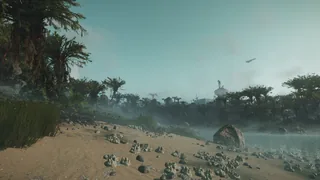
- Cloudy
- Cloudy 天气 only occurs before or after a Rainstorm as they are the 先锋 to it. The skies will quickly fill with dark grey clouds and fog will quickly appear and intensify.
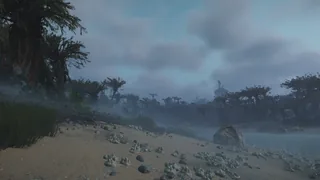
- Rainstorm
- Following the cloudy 天气, 暴雨 have fully covered skies with little to 否 sky 可见, and fog is still rampant and cause lower-than-usual visibility. This 天气 效果 begins after the cloudy 效果 with drizzling, before intensifying into a 重型 rainstorm for a few 分钟, before drizzling once more and finally returning to clear 天气.
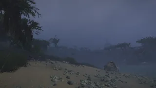
普通
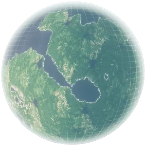
Hologram of a yellow 火山 Jungle 行星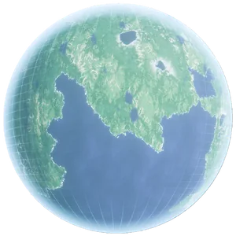
Hologram of a blue 火山 Jungle 行星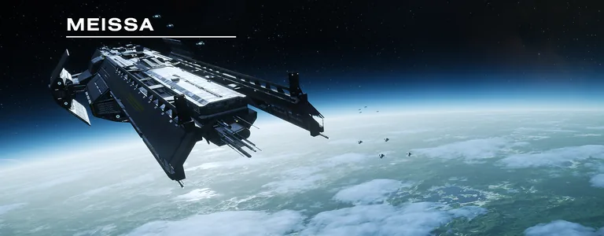
轨道武器 shot of a 火山 Jungle 行星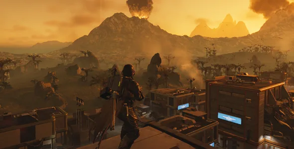
Overlooking a 火山 Jungle city and the wilderness that surrounds it.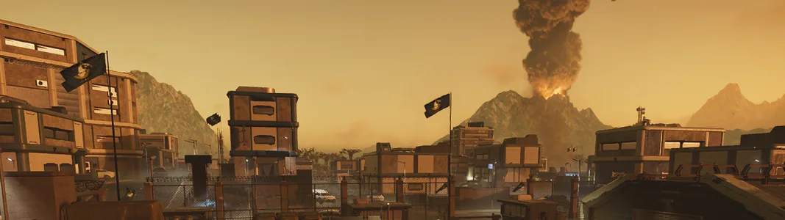
Skyline of a 火山 Jungle City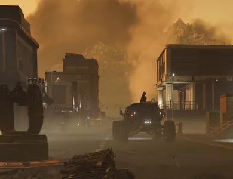
白天 Streets of a 火山 Jungle 行星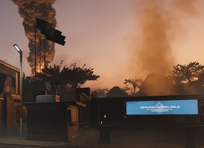
City Checkpoint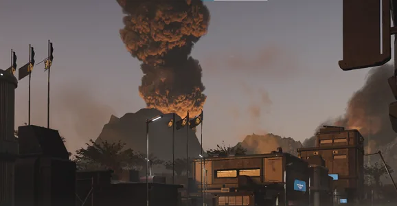
火山 in the 距离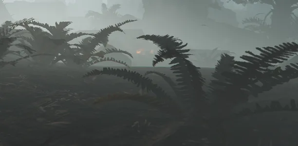
Ferns taken on a 火山 Jungle 行星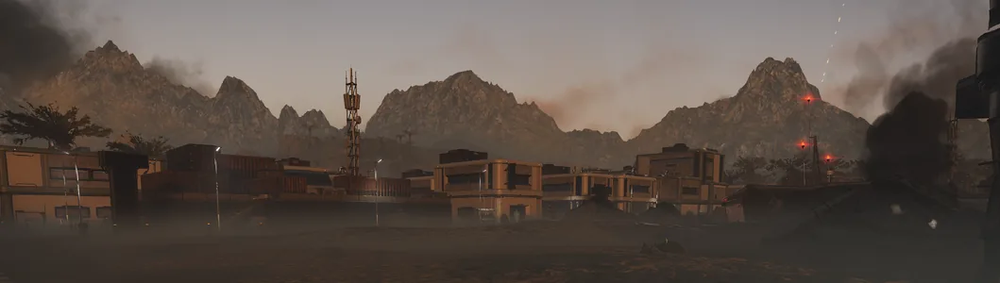
View of a 火山 Jungle city from the 侧面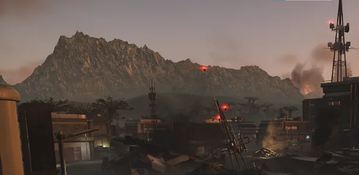
View of a 山 Ridge from inside a City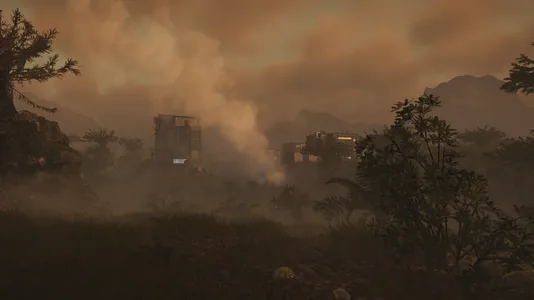
Yellow 火山 Jungle with a colony in the 距离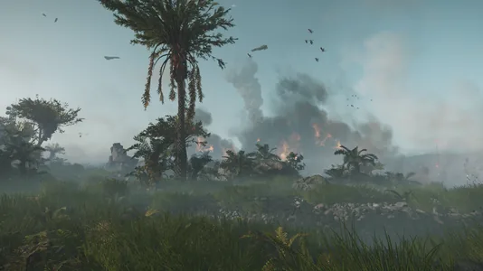
A blue, Earth-like 火山 Jungle's 浮出地面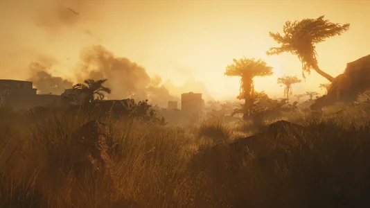
More yellow 火山 Jungles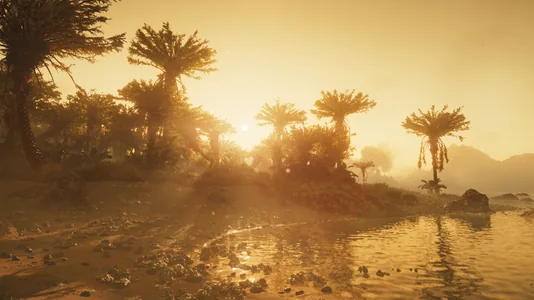
Even more yellow 火山 Jungles
Metropolis
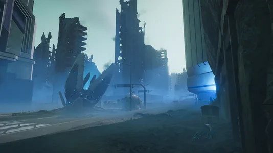
光能者 controlled City
Planets
 Primordia
Primordia Rogue 5
Rogue 5- Alta V
- Mantes
- Gaellivare
- Meissa
- Spherion
- Kirrik
- Baldrick Prime
- Zegema Paradise
- Irulta
- Regnus
 Navi VII
Navi VII- Oasis
- Pollux 31